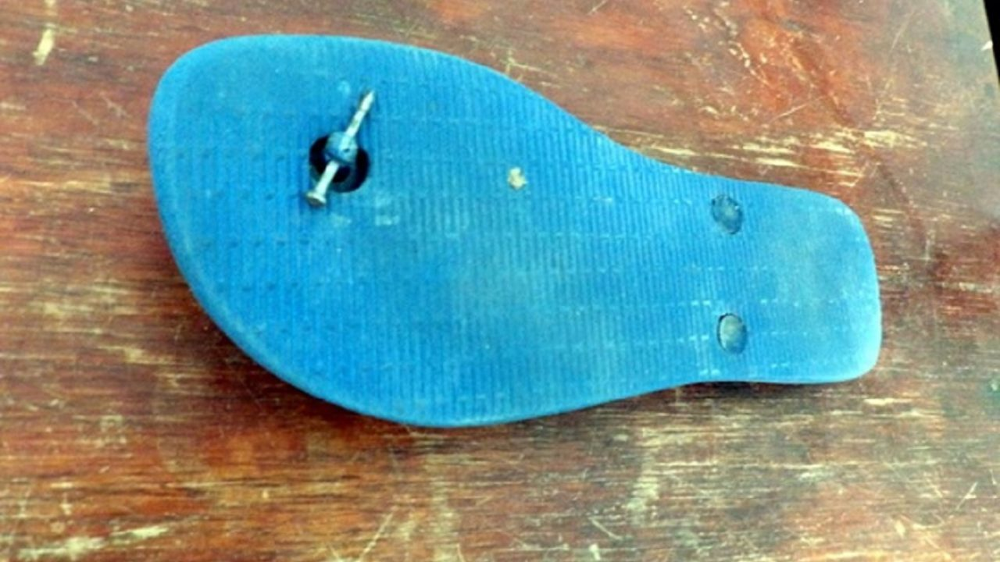

The nail and the flip flops

The most famous Brazilian life hack
This is an ancient technique. It is said that Brazilian born knowing how to fix a broken flip flops.
Seriously, every Brazilian have made this once in life.
What do you need?
Steps
- Place the nail carefully in the broken part of the flip flops;
- Ensure that the nail is firmly stuck in the flip flops;
- You better have emergency nails, in case the flip flops break again.
Return to main page